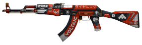

Conheça nossa line de Cs:GO!
Guilherme Cavalcanti (Kvaco) - Kvaco é o fundador do time. Sua função dentro do game é como Awp. ja foi por algumas vezes capitão do time e hoje em dia assume a dupla função de ser 1º Awp e suporte.
Rafael Ferreira (Ogro) - Ogro é o cofundador do time, responsável pela arte e por nosso escudo. Um dos principais players dessa line, ele atua como nosso assalt e por vezes como nosso 2º Awp também! em ambas funções ele sempre se mostrou afiadíssimo na trocação. Atualmente assume a função de 1º Assalt e capitão.
Vladmir Oliveira (Truder) - Truder é o nosso coração de gelo, atuando como 2º assalt, ele é responsável pela maioria dos clutchs em nossas matchs. Portando sua AK-Heroi, truder é o nosso principal nome na hora que precisamos de um round decisivo ou uma situação de retake dificil. Hoje. A função dele é ser 2º Assalt e assassino.
Carlos Beltrão (Belt) - Belt é nosso 3º assalt e nosso “professor” em alguns momentos. Dono de uma mira afiadíssima e um player muito flexível, ele sempre nos surpreende com sua velocidade de inteligência no momento de muita trocação. Hoje em dia, Belt assume a funcão de 3º assalt e lurker. 
Rodrigo Ferreira (9iNine) - 9iNine é o nosso caçula, mas não se deixe enganar por isso, visto que ele tem a mesma genética do nosso Ogro ( rafael ), sim eles são irmãos. Dito tudo isso, fica fácil imaginar o tamanho da habilidade dele. Portador de AK-47 ou M4A1, 9iNine é um assassino completo dentro da tela, sempre se mostra extremamente agressivo na sua função de 4º assalt e rushador/antirush.